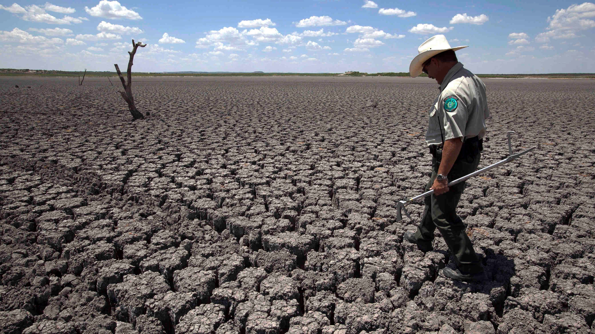

Effect on industrial function
Rising temperatures and sea levels, along with increased incidence of extreme weather events, pose a threat to the global economy. Global infrastructure spending, public food supply, health and surging demand for energy are among the demographic themes that could come with steep climate-change costs.

Even if we successfully combat global warming and temperatures rise up 2°C from preindustrial levels, the damage to the world economy may be moderate, but certain regions and industries will be much more affected than others, according to the Intergovernmental Panel on Climate Change.
Certain industries can’t wait for the issue to be decided. Risk management of today requires making assumptions about what is sure to be an uncertain future. The following seven industries are those considered among the most at risk in the climate-change era.
Insurance
Hurricane Sandy in 2012 resulted in more than $70 billion in economic losses, most of which was flood-related. About $26 billion of that was insured.
Rising sea levels and the potential for increased incidences of catastrophic flooding will likely drive up both premiums and payouts, putting a strain on the insurance industry. The National Flood Insurance Program, for example, collects about $3.6 billion in premiums every year. Yet it insures more than $1.25 trillion in total assets.
Agriculture
As the temperatures rise, many high-producing agricultural regions will feel a squeeze. That matters an awful lot for the 30 percent of the world’s population that works in agriculture.
Though warmer temperatures can help crops grow more quickly, for many crops–like grains–the faster the growth, the less time seeds have to mature, reducing worldwide yields. A 2014 United Nations report suggested that food prices could rise up to 84 percent by 2050 as yields fall.
Energy
For some industries, the risks posed by global warming are mostly about governments’ effort to slow it. Regulations on fossil fuels are likely to increase, threatening the lucrative oil, gas and coal industries.
Environmental Protection Agency regulations in the U.S. have already contributed to a decline in coal use by U.S. power plants. Divestment campaigns by large institutional investors, including university endowments, are beginning to make an impact—most notably, Stanford University’s decision to get out of coal.
Another dangerous, though now speculative, risk is the concept of “stranded assets.” Large-scale projects (like offshore oil rigs) and major fossil fuel deposits may have to be abandoned, lead to huge losses, even bankruptcies.
Beverage industry
Increased water shortages are among the biggest threats to the worldwide soft drink and bottled-water market, valued at $247 billion by an IBIS World report.
Coca-Cola’s 2013 10-K form stated that “changing weather patterns, along with the increased frequency or duration of extreme weather conditions, could impact the availability or increase the cost of key raw materials that the company uses to produce its products.”
Commercial fishing
Ironically enough, as sea levels rise, the fishing industry will be one of the most adversely affected.
Salmon and trout, for instance, thrive in cold, free-flowing water. Habitat loss for both could be as high as 17 percent by 2030 and 34 percent by 2060 if emissions of heat-trapping pollutants are not reduced. That would be a harsh loss for these fisheries, which are worth somewhere between $1.5 and $14 billion a year, according to an analysis from the Natural Resources Defense Council.
Wineries
The production of wine grapes may not be entirely destroyed by climate change, but the geographic landscape of winners and losers in the wine business may change dramatically.
Wine grapes require a particular environment in which to grow and are very sensitive to even the most subtle shifts in climate. As temperatures rise, there may be a two-thirds drop in production in traditional wine areas, such as Burgundy and Tuscany. The $10 billion French wine export industry is particularly vulnerable. At the same time, certain regions, including southern England and greater Seattle, could find themselves home to an emergent wine industry.
Skiing
Oddly enough, climate change may actually be good for skiing meccas like Vermont right now. Because more precipitation is falling with the rising temperatures, there will be more snow during the colder months.
In the long run, however, if winters grow shorter and warmer and the precipitation turns to rain, regions that depend on cold-weather tourism will lose a substantial amount of money. By 2100, two-thirds of European ski resorts may be forced to close, according to an estimate made by Daniel Scott, the Canada research chair in global change and tourism at the University of Waterloo
Wall Street
The impacts of climate change on the financial industry are yet to be determined, but Wall Street may find itself literally under water in coming years.
Much of Lower Manhattan is made up of landfill in areas that, when New York was still called New Amsterdam, were part of the Hudson and East rivers. This land was generally flooded in the aftermath of 2012′s Hurricane Sandy.
Though Wall Street—one of the oldest streets in the city—was built mostly on old, elevated land, the geography of Lower Manhattan may change drastically in coming years.
Drought and Climate Change
While some regions are likely to get wetter as the world warms, other regions that are already on the dry side are likely to get drier.
Take action on global warming now!
Global warming affects evapotranspiration—the movement of water into the atmosphere from land and water surfaces and plants due to evaporation and transpiration— which is expected to lead to:
Increased drought in dry areas.
In drier regions, evapotranspiration may produce periods of drought—defined as below-normal levels of rivers, lakes, and groundwater, and lack of enough soil moisture in agricultural areas. Precipitation has declined in the tropics and subtropics since 1970. Southern Africa, the Sahel region of Africa, southern Asia, the Mediterranean, and the U.S. Southwest, for example, are getting drier. Even areas that remain relatively wet can experience long, dry conditions between extreme precipitation eventsExpansion of dry areas.
Scientists expect the amount of land affected by drought to grow by mid-century—and water resources in affected areas to decline as much as 30 percent. These changes occur partly because of an expanding atmospheric circulation pattern known as the Hadley Cell—in which warm air in the tropics rises, loses moisture to tropical thunderstorms, and descends in the subtropics as dry air. As jet streams continue to shift to higher latitudes, and storm patterns shift along with them, semi-arid and desert areas are expected to expand
There are a number of ways climate change may contribute to drought. Warmer temperatures can enhance evaporation from soil, making periods with low precipitation drier they would be in cooler conditions. Droughts can persist through a “positive feedback,” where very dry soils and diminished plant cover can further suppress rainfall in an already dry area. A changing climate can also alter atmospheric rivers (narrow streams of moisture transported in the atmosphere), which can especially disrupt precipitation patterns in the Western United States. A combination of shifting atmospheric rivers and warmer temperatures can also affect Western snowpack and melt, potentially decimating the water supply.
Estimates of future changes in seasonal or annual precipitation in a particular location are less certain than estimates of future warming. However, at the global scale, scientists are confident that relatively wet places, such as the tropics, and higher latitudes will get wetter, while relatively dry places in the subtropics (where most of the world’s deserts are located) will become drier.
Threats Posed by Drought
Agriculture:
Droughts affect livestock and crops, including cornerstone commodities like corn, soybeans, and wheat. At the height of the 2012 drought, the U.S. Department of Agriculture declared a natural disaster over 2,245 counties, 71 percent of the United States. Globally, drought struck several major breadbasket regions simultaneously in 2012, adding to food price instability. In countries already facing food insecurity, cost spikes can lead to social unrest, migration, and famine.Transportation:
Droughts can affect water levels on rivers of commerce like the Mississippi. Transport barges need at least nine feet of water, and to maintain this level, the U.S. Army Corps of Engineers had to blast, dredge, and clear obstructions on a key stretch of the Mississippi in 2013. Also, drought and heat can buckle roadways. A 2011 drought in Texas caused $26 million in pavement distress.Wildfires:
Drought conditions and record heat have fueled damaging and sometimes deadly wildfires in the U.S. West. Millions of forested acres and thousands of homes have been lost over the past decade due to fires thriving in dry, stressed forests and the proximity of communities to fire-prone forests.Energy:
Droughts can raise concerns about the reliability of electricity production from plants that require cooling water to maintain safe operations. Hydroelectric power may also become unavailable during droughts. When heat waves coincide with droughts, electricity demands can grow, compounding stress on the grid.
How to Build Resilience
Governments and businesses must identify their vulnerability to drought and improve resilience. Actions like conserving water, enhancing water efficiency throughout landscapes, city plans, water infrastructure, identifying alternative water supplies, emergency planning for drought, and planting drought-resistant crops will help prepare for both future droughts and climate change.
Other actions that improve resilience to other stressors, like deploying green infrastructure for stormwater management or increasing energy efficiency in buildings (thereby using less water-cooled power), can improve resilience to drought as a co-benefit.
These steps will be most effective if they are combined with reductions in greenhouse gases that can minimize the ultimate magnitude of climate change.
See how global warming is expected to worsen drought it Australia—and find other hot spots threatened by extremely dry conditions on the Climate Hot Map.